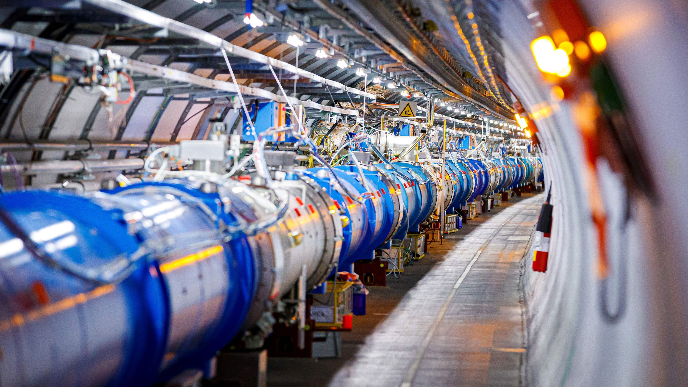

Le Grand collisionneur de hadrons est un accélérateur de particules mis en fonction en 2008 et situé dans la région frontalière entre la France et la Suisse entre la périphérie nord-ouest de Genève et le pays de Gex (France). C'est le plus puissant accélérateur de particules construit à ce jour, a fortiori depuis son amélioration achevée en 2015 après deux ans de mise à l'arrêt2. Il est même présenté comme le plus grand dispositif expérimental jamais construit pour valider des théories physiquesNote 1. En 2012, il confirme l'existence du boson de Higgs. Le LHC a été construit dans le tunnel circulaire (26,659 km de circonférence3) de son prédécesseur, le collisionneur LEP (Large Electron Positron). À la différence de ce dernier, ce sont des protons — de la famille des hadrons — qui sont accélérés pour produire des collisions, en lieu et place des électrons ou des positrons pour le LEP.
Historique:
Le projet de construire un grand collisionneur de hadrons fut officiellement approuvé en décembre 1994, pour succéder au LEP. Les quatre grands détecteurs installés (ATLAS, CMS, ALICE et LHCb) furent approuvés entre 1996 et 1998. Sa mise en service était initialement prévue pour 1999 mais des retards multiples, techniques et financiers, la repoussèrent successivement à la fin de l'année 2007 puis à la fin de l'été 2008. L'arrêt du LEP eut finalement lieu en 2000, et son démantèlement, suivi du début de la construction du LHC, eut lieu presque immédiatement après. Un débat eut lieu en 2000 lors de l'arrêt du LEP. Celui-ci produisit des résultats ambigus aux plus hautes énergies auxquelles il pouvait fonctionner (un peu plus de 200 GeV), suggérant la mise en évidence du boson de Higgs, une particule prédite par le modèle standard de la physique des particules. L'opportunité de prolonger la durée de vie du LEP afin de confirmer ce résultat fut opposée à celle de démanteler le LEP afin de construire le LHC le plus rapidement possible. Ce fut finalement la seconde solution qui fut retenue, la sensibilité du LEP étant considérée comme insuffisante pour confirmer de façon indiscutable l'existence du boson de Higgs, et le risque que le boson de Higgs soit découvert dans l'intervalle par le Tevatron, installé aux États-Unis, étant considéré comme limité. Le coût total du projet est pour le CERN de 6 milliards de francs suisses5 (soit environ 5,2 milliards d'euros). La construction du LHC lui-même se monte à 4,6 milliards de francs suisses, dont une masse salariale de 20 %. La part financée par le CERN dans la construction des détecteurs se monte à 1,1 milliard de francs suisses, plus une contribution majoritaire hors CERN (le CERN finance 20 % de CMS et LHCb, 16 % de ALICE et 14 % de ATLAS). Un peu moins de 300 millions de francs suisses ont été également investis dans l'amélioration de l'injecteur (la chaîne d'accélérateurs qui produit les faisceaux et les injecte dans l'anneau principal) et les moyens informatiques. Tous les éléments de l'accélérateur et de ses expériences (détecteurs) étaient en place fin 2007-début 2008.

Gestion informatique:
Lors du fonctionnement normal de la machine, trente millions de croisements entre les paquets de protons de l'accélérateur auront lieu chaque seconde dans chaque détecteur des quatre expériences du LHC (Alice, Atlas, CMS et LHCb). Chaque croisement générant des collisions de particules qui créent alors une multitude de particules secondaires (plus de 6 000 traces reconstituées par événement ion-lourds43 dans un détecteur tel que CMS). Le flot de données résultant est bien au-delà des capacités de traitement et de stockage actuelles, c'est pourquoi les événements produits sont traités en ligne par des processus de déclenchements rapides, qui rejettent les événements jugés peu intéressants avant même que les données ne soient sorties du détecteur.
"Découvertes:
Deux ans après le début des expériences, des chercheurs travaillant sur ATLAS ont annoncé avoir observé pour la première fois un état du bottomonium prédit par la théorie, le méson chi b61. Fin avril 2012, des chercheurs travaillant sur CMS ont annoncé sur le site de prépublication arXiv la découverte d'un nouveau baryon de type b excité, nommé Ξb*062,63. Le 4 juillet 2012, le CERN annonce, lors d'une conférence64, avoir identifié, avec un degré de confiance de 99,99997 % (5 σ), un nouveau boson dans un domaine de masse de l'ordre de 125–126 GeV c−2, qui paraît compatible avec celui du boson de Higgs. L'annonce est suivie, le 17 septembre 2012, par la publication de deux articles dans la revue Physics Letters B65,66. Le 15 mars 2013, le CERN confirme que, selon toute vraisemblance, il s'agit bien du boson de Higgs67.